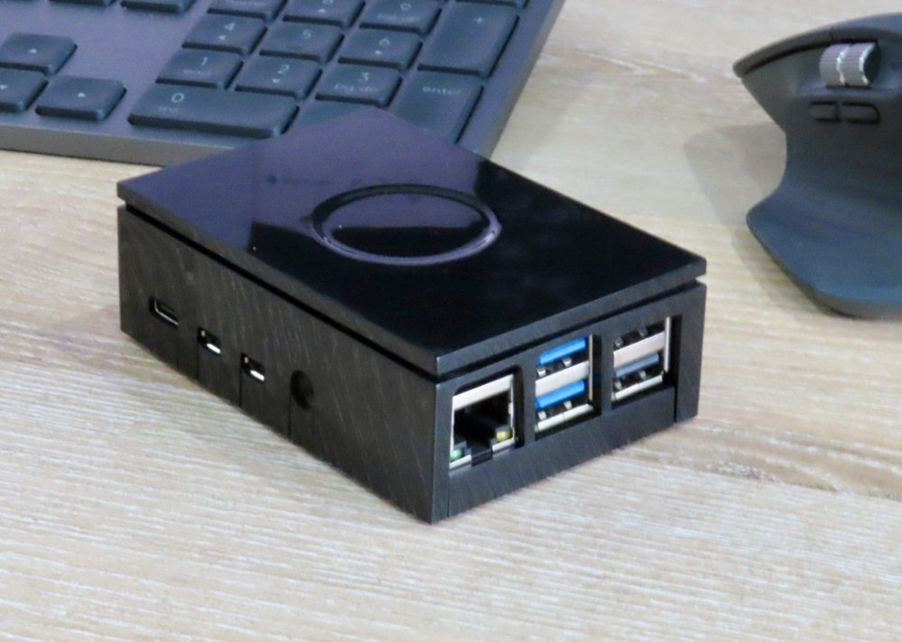

What you get
SAM is a small computer that lives in your home. You text it on Telegram, it does the work, and it keeps its memory at your place.

The SAM unit: a quiet mini PC, smaller than your hand.
The unit
- A mini PC with a modern processor and 8 GB of memory.
- 512 GB SSD inside: room for years of notes, lists and documents.
- A small, quiet fan keeps it cool.
- Low power: its power supply is rated 27 W and it usually uses far less, so it can stay on day and night.
- It connects to your home internet with a network cable (or wifi) and needs no screen once it is set up.
In the box
- The SAM unit, with the SSD already inside.
- The power supply.
- A small memory card, used once during setup.
- A screen cable, for the setup evening.
- A printed quick guide. The full manual is online.
Where your information lives
SAM stays in your home. Your phone talks to it through Telegram, and its memory is kept on the unit itself.
- You text SAM on Telegram, like texting a person. Telegram delivers the message to your unit at home.
- SAM looks in its memory: your notes, lists, reminders and what it has learned about you. That memory is stored on the unit in your home, not in an online database.
- SAM asks Claude to think. Claude is the AI from Anthropic. SAM sends it your message and only the parts of its memory that are needed for this answer, through your own Claude account.
- SAM replies on Telegram, and writes down anything worth remembering, again on the unit at home.
Good to know
- Only your phones. SAM only talks to phones you have paired with it during setup.
- Your notes, your copy. Everything SAM writes down is in a notes folder on the unit, which you can open and read yourself.
- Email and calendar stay where they are. Gmail and Google Calendar stay at Google; SAM reads them only through the connections you approve, and you can switch those off at any time.
- Honest about the cloud. Telegram carries your messages, and Claude does the thinking online. What it reads to answer you is handled under Anthropic's terms for your account.